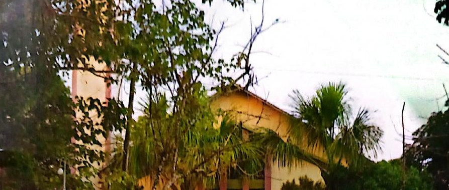
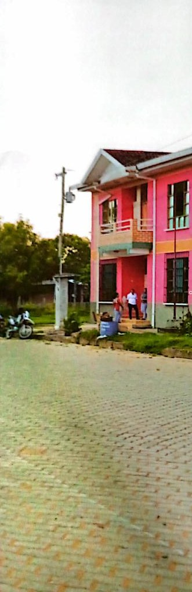
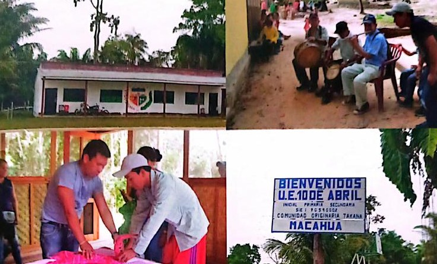
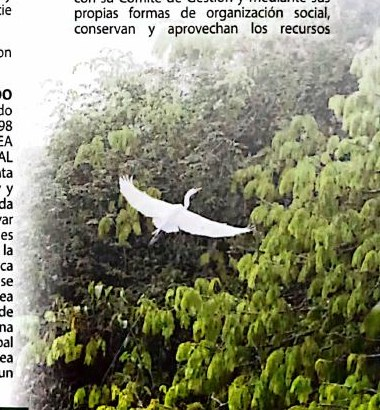
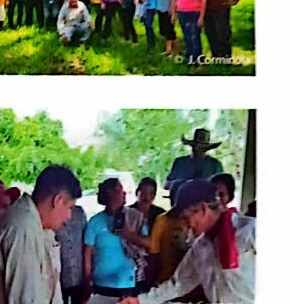
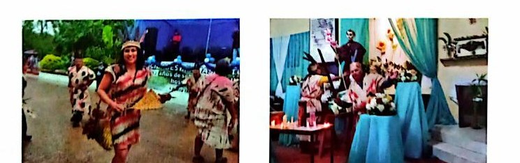

Territorio
Geografía de Ixiamas
Ubicación, límites, altitud, relieve, distritos, flora y fauna.
Ver secciónUn recorrido web por la Revista Sociocultural de Ixiamas 2024: geografía, historia, comunidades, fiesta patronal, conservación ambiental y acciones de desarrollo municipal.
Esta versión separa el contenido en páginas temáticas para que no quede todo acumulado en una sola pantalla.

Ubicación, límites, altitud, relieve, distritos, flora y fauna.
Ver sección
Desde la etapa precolonial hasta el auge de la quina, la goma y la consolidación republicana.
Ver sección
Macahua, San Antonio de Padua, Bruno Racua y expresiones culturales.
Ver sección
Áreas protegidas, acuerdos de conservación y protección de fauna silvestre.
Ver sección
Ganadería, agricultura, educación, salud, caminos, internet y saneamiento.
Ver sección
Programa resumido de actividades por el aniversario y San Antonio de Padua.
Ver secciónLa revista presenta a Ixiamas como un municipio con crecimiento, historia, biodiversidad y retos de desarrollo. El mensaje central es que el progreso debe hacerse con trabajo coordinado entre autoridades, comunidades y organizaciones sociales.
También resalta la importancia de preservar la memoria histórica, fortalecer la identidad local y proyectar obras que mejoren la calidad de vida de la población sin perder el vínculo con la Amazonía.
Ixiamas no se presenta solo como un lugar turístico; se presenta como un territorio vivo: con pueblos, cultura, bosque, producción, fiesta y memoria histórica.